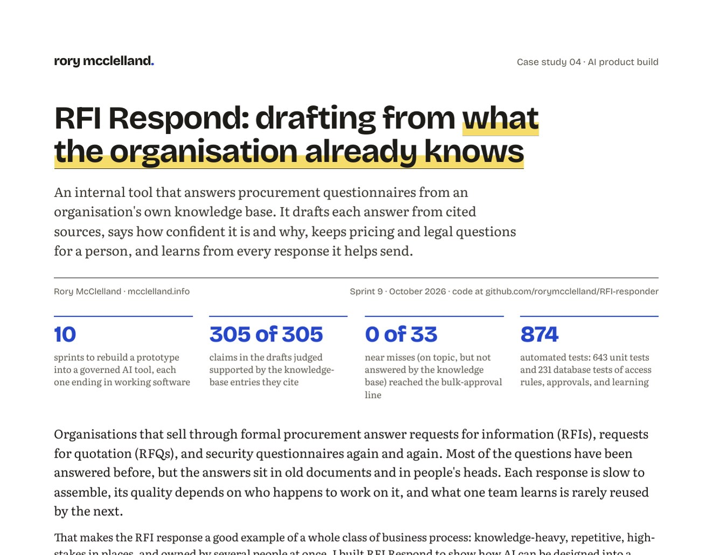

Work and case studies
How I build, and what I build: guardrails first.
Tools I have designed and built with AI coding tools, four of them written up in full as short case studies you can download. The first sets out how I run AI as an engineering team; the second follows one system, an automated job search and application tracker, from design to daily use; the third applies the same method to a small product whose full code is public on GitHub; and the fourth shows how AI can be designed into a knowledge-heavy business process to make it faster, more accurate, and more repeatable. In each, safety, privacy, and the limits on what a system may do are settled before the first line of code is written.
Never list firstWhat a system must never do is agreed at the start, and enforced by design rather than by instruction alone.
Data has boundariesWhich part may see which data is decided before what to build. Some data no AI ever reaches.
Authority is earnedRead-only first. An AI acts on its own only after it has been tested, and every action can be undone.
Evidence, not assertionTests before code, an independent reviewer, bars set in advance, and a red team that plays the attacker.
The safety and governance techniques behind these principles →

Case study 01 · Way of working
How I build with AI: guardrails first
When I build software, Claude is the engineering team, and I run it as I would a human one: job stories, a ranked backlog, short sprints with a definition of ready, tests before code, and a close that leaves nothing stranded. The note covers where my approach to privacy comes from, the build cycle, and the seven guardrail principles I apply to anything that uses AI, with examples from two of my own builds.
- An AI agent only where isolation, independence or on-demand use calls for one; everything else is ordinary, testable code.
- Text written by strangers is treated as data, never as instructions.
- A paper trail a reviewer would ask for: decision log, system card, threat model and a risk register organised by the NIST AI Risk Management Framework.
Download the PDF ↓5 pages · A4
Read the summary: how the build runs →

Case study 02 · Agentic application
Job Scout: a guarded, private job search
An automated job search and application tracker that runs every morning on my own mailbox and career record. It reads alerts and replies, reads the full adverts, scores each role, drafts a CV and letter for the best few, has a second agent check every claim, and lays it all out on a private board. It never applies, replies or contacts anyone; I make every decision. A demo copy, running on made-up data, is public on GitHub.
- Adverts and emails are read by a model on the local PC, with no tools and no internet access; only a checked summary leaves the machine.
- An independent reviewer must quote the career record for every claim it accepts, and code confirms each quote exists.
- Measured, not assumed: 21 of 22 adverts read correctly, and all ten hostile red-team inputs stopped.

Case study 03 · Product build
Task oversight: one list I can trust
My tasks were spread across two AI assistants, a task manager and notes on the local PC, and no single list was complete. This app pulls them into one view, ranks them on an Eisenhower matrix and sets them against the calendar. It was built in seven phases from a job-story backlog, with every structural choice written down, and the full code and documentation are public.
- Local only: tasks stay in one file on the local PC, every source is read-only, and only the app's own page may change a task.
- Nothing is ever deleted, and a task file the app can't read is never overwritten.
- 18 written decisions, and a full QA pass whose every finding was fixed with a test that failed first: 154 tests in all.

Case study 04 · AI product build
RFI Respond: drafting from what the organisation already knows
An internal tool that answers procurement questionnaires from an organisation's own knowledge base, rebuilt in ten sprints from a prototype first made in three hours for a job interview. It shows how AI can be designed into a knowledge-heavy business process to make it faster, more accurate, and more repeatable, and how the same pattern carries over to support, HR, onboarding, bids, and other flows.
- Drafts only from cited sources, checked in code: all 305 claims in the test drafts judged supported, and the judge caught 95 of 95 planted ones.
- Confidence is calibrated, not guessed; bulk approval needs the checker's "yes", and pricing and legal questions always go to a person.
- The knowledge base learns from every response, with provenance, review dates, and an admin's review of members' changes.
Earlier build
An earlier tool, designed from the ground up and built with an AI coding tool. It does not use AI itself: I wrote the requirements, and the tool wrote the code. It is next in line for the same rebuild as RFI Respond.
Asynchronous by default · built with an AI coding tool
Meeting Tool
Built on the principle that work should be asynchronous by default. It is designed to follow Slack and email conversations and suggest a meeting only when ambiguity, confusion and frustration reach a set level, then find a free slot and send the invitations.